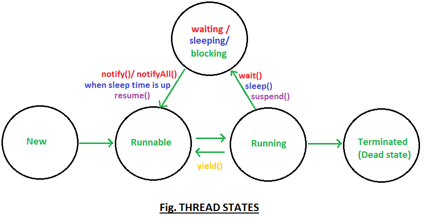
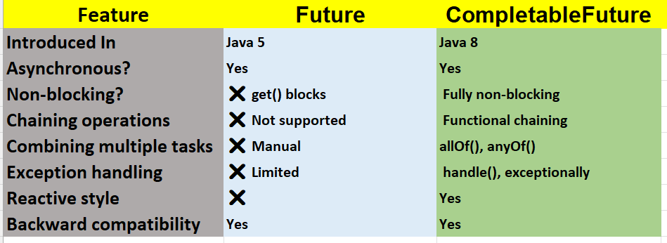

Java Multithreading
1. What is multithreading in java
Multithreading in Java allows multiple threads to run concurrently within a single program. This enables efficient CPU usage by allowing the operating system to execute different parts of a program at the same time. Multithreading improves the performance of applications, especially those that need to perform multiple tasks simultaneously, like games, real-time data processing, or web servers.
1. Thread states/ Thread life cycle in java
Thread states/Thread life cycle is very basic question, before going deep into concepts we must understand Thread life cycle. This post contains in depth explanation of thread methods explaining which method puts thread from which state to which state.
Thread have following states
- New: A thread is in this state when it is created but not yet started.
- Runnable: A thread is in this state when it is ready to execute, but the JVM scheduler decides when to run it.
- Blocked: A thread enters this state when it is waiting for a lock to be released by another thread.
- Waiting: A thread enters this state when it is waiting indefinitely for another thread to perform a particular action (e.g., wait() method).
- Timed Waiting: A thread enters this state when it is waiting for a specific amount of time (e.g., sleep(), join() with a timeout).
- Terminated: A thread enters this state when it has finished execution or was terminated due to an error.
2. Difference between Process and Thread in java
One process can have multiple Threads,
Thread are subdivision of Process. One or more Threads runs in the context of process. Threads can execute any part of process. And some part of process can be executed by multiple Threads.
Processes have their own copy of the data segment of the parent process while Threads have direct access to the data segment of its process.
Processes have their own address while Threads share the address space of the process that created it.
Process creation needs whole lot of stuff to be done, we might need to copy whole parent process, but Thread can be easily created.
Processes can easily communicate with child processes but interprocess communication is difficult. While, Threads can easily communicate with other threads of the same process using wait() and notify() methods.
In process all threads share system resource like heap Memory etc. while Thread has its own stack.
Any change made to process does not affect child processes, but any change made to thread can affect the behavior of the other threads of the process.
3. Threads can be created in two ways
You can create a thread in Java by either:
• Extending the Thread class: Create a subclass of Thread and override the run() method to define the task.
• Implementing the Runnable interface: Create a class that implements Runnable and define the run() method. Then, pass an instance of the class to a Thread object and start the thread by calling its start() method.
1. Thread creation by implementing java.lang.Runnable interface.
Create Runnable object, pass it in thread constructor. But our thread is not going to start until we call thread.start(), calling start() method internally calls run() method.
class MyRunnable implements Runnable{
public void run(){
//overrides Runnable's run() method
System.out.println("in run() method");
}
}
public class MyClass {
public static void main(String args[]){
MyRunnable runnable=new MyRunnable();
Thread thread=new Thread(runnable);
thread.start();
}
}
/*OUTPUT */
in run() method
*/
2. Program to create thread extending java.lang.Thread
class MyThread extends Thread{
public void run(){
//overrides Thread's run() method
System.out.println("in run() method");
System.out.println("currentThreadName=" + Thread.currentThread().getName());
}
}
public class MyClass {
public static void main(String args[]){
System.out.println("currentThreadName=" + Thread.currentThread().getName());
MyThread obj=new MyThread();
obj.start();
}
}
/*OUTPUT
currentThreadName= main
in run() method
currentThreadName= Thread-1
*/
If we note output of program, we will find that program started with main thread, and then calling obj.start() called run() method with Thread-1
We should implement Runnable interface or extend Thread class ?
Well the answer is you must extend Thread only when you are looking to modify run() and other methods as well. If you are simply looking to modify only the run() method implementing Runnable is the best option (Runnable interface has only one abstract method i.e. run() ).
4. Differences between implementing Runnable interface and extending Thread class
1. Multiple inheritance in not allowed in java : When we implement Runnable interface we can extend another class as well, but if we extend Thread class we cannot extend any other class because java does not allow multiple inheritance. So, same work is done by implementing Runnable and extending Thread but in case of implementing Runnable we are still left with option of extending some other class. So, it's better to implement Runnable.
2. Thread safety : When we implement Runnable interface, same object is shared amongst multiple threads, but when we extend Thread class each and every thread gets associated with new object.
3. Inheritance (Implementing Runnable is lightweight operation) : When we extend Thread unnecessary all Thread class features are inherited, but when we implement Runnable interface no extra feature are inherited, as Runnable only consists only of one abstract method i.e. run() method. So, implementing Runnable is lightweight operation.
4. Coding to interface : Even java recommends coding to interface. So, we must implement Runnable rather than extending thread. Also, Thread class implements Runnable interface.
5. Don't extend unless you wanna modify fundamental behaviour of class, Runnable interface has only one abstract method i.e. run() : We must extend Thread only when you are looking to modify run() and other methods as well. If you are simply looking to modify only the run() method implementing Runnable is the best option (Runnable interface has only one abstract method i.e. run() ). We must not extend Thread class unless we're looking to modify fundamental behaviour of Thread class.
6. Flexibility in code when we implement Runnable : When we extend Thread first a fall all thread features are inherited and our class becomes direct subclass of Thread, so whatever action we are doing is in Thread class. But, when we implement Runnable we create a new thread and pass runnable object as parameter, we could pass runnable object to executorService & much more. So, we have more options when we implement Runnable and our code becomes more flexible.
7. ExecutorService : If we implement Runnable, we can start multiple thread created on runnable object with ExecutorService (because we can start Runnable object with new threads), but not in the case when we extend Thread (because thread can be started only once).
Conclusion : I'll recommend you to go for implementing Runnable rather than extending Thread class.
Difference between Runnable and Thread in Java?
1. Runnable is an interface that defines a single method run() , which contains the code to be executed by a thread. Thread , on the other hand, is a class that represents an actual thread of execution. A Thread can implement the Runnable interface, allowing you to decouple the task from the thread management, enabling better code reuse.
What will happen if we don't override run method of thread?
When we call start() method on thread, it internally calls run() method with newly created thread. So, if we don't override run() method newly created thread won't be called and nothing will happen.
class MyThread extends Thread {
//don't override run() method
}
public class DontOverrideRun {
public static void main(String[] args) {
System.out.println("main has started.");
MyThread thread=new MyThread();
thread.start();
System.out.println("main has ended.");
}
}
/*OUTPUT */
main has started.
main has ended.
*/
As we saw in output, we didn't override run() method that's why on calling start() method nothing happened.
What will happen if we override start method of thread?
This question will again test your basic core java knowledge how overriding works at runtime, what what will be called at runtime and how start and run methods work internally in Thread Api.
When we call start() method on thread, it internally calls run() method with newly created thread. So, if we override start() method, run() method will not be called until we write code for calling run() method.
class MyThread extends Thread {
@Override
public void run() {
System.out.println("in run() method");
}
@Override
public void start() {
System.out.println("In start() method");
}
}
public class OverrideStartMethod {
public static void main(String[] args) {
System.out.println("main has started.");
MyThread thread1=new MyThread();
thread1.start();
System.out.println("main has ended.");
}
}
/*OUTPUT
main has started.
In start() method
main has ended.
*/
If we note output, we have overridden start method and didn't called run() method from it, so, run() method wasn't call.
Difference between starting thread with run() and start() methods in java
When you call start() method, main thread internally calls run() method to start newly created Thread. So run() method is ultimately called by newly created thread.
When you call run() method main thread rather than starting run() method with newly thread it start run() method by itself.
Let's use start() method to start a thread
class MyRunnable implements Runnable{
public void run() { //overrides Runnable's run() method
System.out.println("in run() method");
System.out.println("currentThreadName=" + Thread.currentThread().getName());
}
}
public class MyClass {
public static void main(String args[]) {
System.out.println("currentThreadName=" + Thread.currentThread().getName());
MyRunnable runnable=new MyRunnable();
Thread thread=new Thread(runnable);
thread.start();
}
}
/*OUTPUT
currentThreadName= main
in run() method
currentThreadName= Thread-0
*/
If we note output, when we called start() from main thread, run() method was called by new Thread (i.e. Thread-0).
Let's use run() method to start a thread
class MyRunnable implements Runnable{
public void run(){
//overrides Runnable's run() method
System.out.println("in run() method");
System.out.println("currentThreadName=" + Thread.currentThread().getName());
}
}
public class MyClass {
public static void main(String args[]) {
System.out.println("currentThreadName=" + Thread.currentThread().getName());
MyRunnable runnable=new MyRunnable();
Thread thread=new Thread(runnable);
thread.run();
}
}
/*OUTPUT
currentThreadName= main
in run() method
currentThreadName= main
*/
If we note output, when we called run() from main thread, run() method was called by main Thread, not by newly created thread (i.e. Thread-0).
Can we start Thread again in java?
No, we cannot start Thread again, doing so will throw runtimeException java.lang.IllegalThreadStateException. The reason is once run() method is executed by Thread, it goes into dead state.
Let's take an example-
Thinking of starting thread again and calling start() method on it (which internally is going to call run() method) for us is some what like asking dead man to wake up and run. As, after completing his life person goes to dead state.
Program to show that IllegalThreadStateException is thrown when we try to start thread again
public class MyClass implements Runnable{
@Override
public void run(){
System.out.println("in run() method, method completed.");
}
public static void main(String[] args) {
MyClass obj=new MyClass();
Thread thread1=new Thread(obj,"Thread-1");
thread1.start();
thread1.start(); //will throw java.lang.IllegalThreadStateException at runtime
}
}
/*OUTPUT
in run() method, method completed.
Exception in thread "main" java.lang.IllegalThreadStateException
at java.lang.Thread.start(Unknown Source)
*/
Different ways to achieve thread synchronization in Java?
Thread synchronization can be achieved using:
1. Synchronized Methods: Locking an entire method so that only one thread can execute it at a time.
2. Synchronized Blocks: Locking a specific block of code within a method, providing more granular control over which sections of code are synchronized.
3. Explicit Locks: Using ReentrantLock and other locks from the java.util.concurrent.locks
package for more advanced synchronization features, such as trying to acquire a lock without blocking.
Difference between synchronized method and synchronized block?
1. A synchronized method locks the entire method, ensuring that only one thread can execute that method at a time. This can potentially lock unnecessary parts of the code.
2. A synchronized block locks only the specific block of code within a method, providing more flexibility and allowing you to lock just the critical section that requires synchronization, reducing the scope of contention.
How do threads communicate with each other?
1. Threads communicate using wait(), notify(), and notifyAll() methods,
which are part of the Object class in Java. These methods are typically used for inter-thread
communication in situations where threads need to coordinate their execution based on some shared state or
condition.
Purpose of wait(), notify(), and notifyAll()?
1. wait() causes the current thread to release the lock and enter a waiting state until another
thread calls notify() or notifyAll() on the same object.
2. notify() wakes up a single thread that is waiting on the object's monitor.
3. notifyAll() wakes up all threads that are waiting on the object's monitor, allowing them to
compete for the lock.
What are the ways to achieve thread safety in Java?
1. Thread safety can be achieved using:
- Synchronization: Using synchronized blocks or methods to control access to shared resources.
- Volatile Variables: Ensuring that changes to variables are immediately visible to other threads.
- Atomic Variables: Using classes like AtomicInteger or
AtomicReference to perform operations atomically.
- Concurrent Collections: Using thread-safe collections like ConcurrentHashMap or
CopyOnWriteArrayList for managing shared data.
What is an atomic operation?
1. An atomic operation is a series of operations that are executed as a single, indivisible unit of work. It ensures that no other thread can interfere with the operation. For example, incrementing a variable atomically means that no other thread can change the value of the variable between the read and write operations.
What is the difference between volatile keyword and Atomic classes?
1. The volatile keyword ensures visibility of changes to a variable across all threads, meaning when
one thread modifies a variable, other threads see the updated value immediately. However, it does not ensure
atomicity (i.e., it doesn't prevent race conditions).
2. Atomic classes, such as AtomicInteger, provide both visibility and atomicity for operations like
incrementing or updating a variable.
Volatile keyword in java- difference between synchronized and volatile, 10 key points about volatile keyword, why volatile variables are not cached in memory
volatile keyword?
Using Volatile is java is very important topic, I will be covering this topic in lot of detail. Java allows threads to access shared variables. As a rule, to ensure that shared variables are consistently updated, a thread should ensure that it has exclusive use of such variables by obtaining a lock that enforces mutual exclusion for those shared variables.
If a field is declared volatile, in that case the Java memory model ensures that all threads see a consistent value for the variable.
What could be impact of not using volatile keyword?
We will create method1() which will be called repeatedly called by thread1 & method2() which will be called repeatedly called by thread2.
static int x = 0, y = 0;
static void method1() {
x++; y++;
}
static void method2() {
System.out.println("x=" + x + " y=" + y);
}
then method two could occasionally print a value for x that is greater than the value of y, because neither synchronization nor volatile is used. The shared values of x and y might be updated out of order.
Full program without synchronized or volatile, x and y are updated out of order
public class MyClass {
static int x = 0, y = 0;
static void method1() {
x++; y++;
}
static void method2() {
System.out.println("x=" + x + " y=" + y);
}
public static void main(String[] args) {
Thread thread1=new Thread(){
public void run(){
for(int i=0; i<10;i++)
method1();
}
};
Thread thread2=new Thread(){
public void run(){
for(int i=0; i<10;i++)
method2();
}
};
thread1.start();
thread2.start();
}
}
/*OUTPUT
x=10 y=10
x=10 y=10
x=10 y=10
x=10 y=10
x=10 y=10
x=10 y=10
x=10 y=10
x=10 y=10
x=10 y=10
x=10 y=10
x=10 y=10
x=10 y=10
*/
NOTE: Output of this programs may not be that much conclusive because of unpredictable thread behaviour.
How can be ensure that x and y are updated in order?
We can use synchronized method or volatile keyword.
Can we have volatile methods in java?
No, volatile is only a keyword, can be used only with variables.
Can we have synchronized variable in java?
No, synchronized can be used only with methods, i.e. in method declaration.
Let's use synchronized method first :
static int x = 0, y = 0;
static synchronized void method1() {
x++;
}
static synchronized void method2() {
System.out.println("x=" + x + " y=" + y);
}
Using synchronized keyword will help updating x and y in order. Because of synchronization used against method we ensures that both methods are not called concurrently. Therefore, during execution of method2() x and y will be always equal.
Full program using synchronized keyword, x and y are always updated in order
public class MyClass {
static int x = 0, y = 0;
static synchronized void method1() {
x++;
}
static synchronized void method2() {
System.out.println("x=" + x + " y=" + y);
}
public static void main(String[] args) {
Thread thread1=new Thread(){
public void run(){
for(int i=0; i<10;i++)
method1();
}
};
Thread thread2=new Thread(){
public void run(){
for(int i=0; i<10;i++)
method2();
}
};
thread1.start();
thread2.start();
}
}
NOTE: Output of this programs may not be that much conclusive because of unpredictable thread behaviour. But our aim was to show that method2() will always observe same value for x and y.
Now, let's use volatile keyword :
static volatile int x = 0, y = 0;
static void method1() {
x++;
}
static void method2() {
System.out.println("x=" + x + " y=" + y);
}
This allows method1() & method2() to be executed concurrently, but assures that accesses to the shared values for x and y occur exactly as many times, and in exactly the same order, as they appear to occur during execution of the program text by each thread. Therefore, the shared value for y is never greater than that for x, because each update to x must be reflected in the shared value for x before the update to y occurs.
It is possible, however, that certain invocation of method2() might note a value for y that is much greater than the value noted for x, because method1() might be executed many times between the moment when method2() fetches the value of x and the moment when method2() fetches the value of y.
Full program using volatile keyword, x and y are updated in order
public class MyClass {
static volatile int x = 0, y = 0;
static void method1() {
x++; y++;
}
static void method2() {
System.out.println("x=" + x + " y=" + y);
}
public static void main(String[] args) {
Thread thread1=new Thread(){
public void run(){
for(int i=0; i<10;i++)
method1();
}
};
new Thread(){
public void run(){
for(int i=0; i<10;i++)
method2();
}
};
thread1.start();
thread2.start();
}
}
NOTE: Output of this programs may not be that much conclusive because of unpredictable thread behaviour.
Volatile variable is not Cached in CPU memory
Volatile members are never cached in CPU by jvm, they are always read from main memory i.e. from stack where variable lives.
Differences between synchronized and volatile keyword in detail in java
1. Volatile can be used as a keyword against the variable, we cannot use volatile against method declaration.
volatile void method1(){} //it's illegal, compilation error.
volatile int i; //legal
While synchronization can be used in method declaration or we can create synchronization blocks. Variables cannot be synchronized.
Synchronized method:
synchronized void method2(){} //legal
Synchronized block:
void method2(){
synchronized (this) {
//code inside synchronized block.
}
}
Synchronized variable (illegal):
synchronized int i; //it's illegal, compilation error.
2. Volatile does not acquire any lock on variable or object, but Synchronization acquires lock on method or block in which it is used.
3. Volatile variables are not cached, but variables used inside synchronized method or block are cached.
4. When volatile is used will never create deadlock in program, as volatile never obtains any kind of lock . But in case if synchronization is not done properly, we might end up creating dedlock in program.
5. Synchronization may cost us performance issues, as one thread might be waiting for another thread to release lock on object. But volatile is never expensive in terms of performance.
What is the ExecutorService in Java and how is it different from using threads directly?
1. ExecutorService is an interface in Java that simplifies thread management. It provides methods to submit tasks for execution, manage thread pools, and shut down threads gracefully. Unlike using threads directly, ExecutorService abstracts away low-level thread management and provides better control over task scheduling and execution.
How do you create an ExecutorService?
1. You can create an ExecutorService using the factory methods provided by the Executors class:
- Executors.newFixedThreadPool(int nThreads) creates a fixed-size thread pool.
- Executors.newCachedThreadPool() creates a thread pool that can expand as needed.
- Executors.newSingleThreadExecutor() creates a single-threaded executor.
- Executors.newScheduledThreadPool(int corePoolSize) creates a pool that supports scheduled tasks.
Difference between execute() and submit() methods in ExecutorService.
1. execute(): Used for submitting tasks that do not return any result or need to be tracked (i.e., void tasks). It does not return any value.
2. submit(): Used for tasks that return a result. It returns a Future object, which can be used to retrieve the result of the task or check if it has completed.
How do you gracefully shut down an ExecutorService?
1. You can gracefully shut down an ExecutorService by calling the shutdown() method. This initiates an orderly shutdown in which previously submitted tasks are executed, but no new tasks will be accepted. You can also use shutdownNow() to attempt to stop all actively executing tasks and halt the processing of waiting tasks.
Difference between shutdown() and shutdownNow() methods in ExecutorService?
1. shutdown(): Initiates an orderly shutdown, where tasks that were already submitted are completed before the service is fully shut down. No new tasks will be accepted.
2. shutdownNow(): Tries to stop all actively executing tasks and attempts to stop any waiting tasks. It returns a list of the tasks that were waiting to be executed.
What is a Future in Java and how is it related to ExecutorService?
1. A Future represents the result of an asynchronous computation. When you submit a task to an ExecutorService using submit(), it returns a Future object. You can use the Future object to check if the task is completed, retrieve the result, or cancel the task.
How can you cancel a task that has been submitted to an ExecutorService?
1. You can cancel a task by calling the cancel() method on the Future object returned by the submit() method. If the task is still running, calling cancel() will attempt to interrupt it. If the task has already finished or been canceled, it will have no effect.
What is a Deadlock in Java?
A deadlock is a situation where two or more threads are blocked forever, each waiting for a resource that the other holds. This can occur when threads are locked in a circular dependency, where thread A holds a lock needed by thread B, and thread B holds a lock needed by thread A. This prevents the threads from making progress.
Example of Deadlock in Java
public class DeadlockExample {
private static final Object lock1 = new Object();
private static final Object lock2 = new Object();
public static void main(String[] args) {
Thread t1 = new Thread(() -> {
synchronized (lock1) {
System.out.println("Thread 1: Holding lock1...");
try { Thread.sleep(100); } catch (InterruptedException ignored) {}
synchronized (lock2) {
System.out.println("Thread 1: Acquired lock2!");
}
}
});
Thread t2 = new Thread(() -> {
synchronized (lock2) {
System.out.println("Thread 2: Holding lock2...");
try { Thread.sleep(100); } catch (InterruptedException ignored) {}
synchronized (lock1) {
System.out.println("Thread 2: Acquired lock1!");
}
}
});
t1.start();
t2.start();
}
}
What happens here?
- Thread 1 locks lock1 and waits for lock2.
- Thread 2 locks lock2 and waits for lock1.
- Both threads wait forever = deadlock.
How to Resolve or Avoid Deadlock in Java
Here are all major techniques to resolve or avoid deadlocks:
1. Lock Ordering
Ensure that all threads acquire locks in the same order.
Fix for the above example:
Thread t2 = new Thread(() -> {
synchronized (lock1) {
System.out.println("Thread 2: Holding lock1...");
try { Thread.sleep(100); } catch (InterruptedException ignored) {}
synchronized (lock2) {
System.out.println("Thread 2: Acquired lock2!");
}
}
});
Now both threads lock lock1 before lock2.
2. Try-Lock with Timeout (Using ReentrantLock)
Use tryLock() from java.util.concurrent.locks.ReentrantLock which tries to get a lock and times out if unavoidable.
import java.util.concurrent.locks.Lock;
import java.util.concurrent.locks.ReentrantLock;
import java.util.concurrent.TimeUnit;
public class DeadlockAvoidWithTryLock {
private static final Lock lock1 = new ReentrantLock();
private static final Lock lock2 = new ReentrantLock();
public static void main(String[] args) {
Thread t1 = new Thread(() -> {
try {
if (lock1.tryLock(1000, TimeUnit.MILLISECONDS)) {
System.out.println("Thread 1: Acquired lock1");
Thread.sleep(100);
if (lock2.tryLock(1000, TimeUnit.MILLISECONDS)) {
System.out.println("Thread 1: Acquired lock2");
lock2.unlock();
}
lock1.unlock();
}
} catch (InterruptedException e) {
e.printStackTrace();
}
});
Thread t2 = new Thread(() -> {
try {
if (lock2.tryLock(1000, TimeUnit.MILLISECONDS)) {
System.out.println("Thread 2: Acquired lock2");
Thread.sleep(100);
if (lock1.tryLock(1000, TimeUnit.MILLISECONDS)) {
System.out.println("Thread 2: Acquired lock1");
lock1.unlock();
}
lock2.unlock();
}
} catch (InterruptedException e) {
e.printStackTrace();
}
});
t1.start();
t2.start();
}
}
3. Using a Single Lock Object (Lock Coarsening)
If possible, use one lock instead of multiple.
synchronized (lock) { // Safe block }
Simplifies design and avoids cyclic lock dependency.
4. Deadlock Detection Tools
• Use jstack to analyze deadlocks in a running Java process.
• Use Thread Dump Analysis Tools or VisualVM.
5. Timeout on Thread.join() or Wait
When using join() or wait(), always consider adding a timeout to avoid indefinite blocking.
thread.join(1000); // wait at most 1 second
6. Avoid Nested Locks (if possible)
Try not to acquire one lock while holding another unless absolutely necessary.
✔ Summary Table
| Approach | Description | Example API/Use |
|---|---|---|
| Lock Ordering | Always acquire locks in same order | Same order: lock1 → lock2 |
| Try-Lock | Use tryLock() with timeout | ReentrantLock |
| Single Lock (Coarsening) | Use one lock instead of multiple | synchronized(Lock) |
| Timeout on Join/Wait | Prevents indefinite thread wait | join(timeout) |
| Avoid Nested Locks | Reduces risk of circular waiting | Flat structure |
| Monitoring Tools | Identify deadlocks in production | jstack, VisualVM |
✔ Final Tips
• Favor higher-level concurrency utilities like ExecutorService, Semaphore, and CountDownLatch.
• Avoid manual synchronized blocks when possible.
• Always analyze thread dumps regularly in complex apps.
1. Explain the lifecycle of an ExecutorService?
a. The lifecycle of an ExecutorService involves:
i. Creation: Instantiate an ExecutorService using one of the factory methods.
ii. Task Submission: Submit tasks for execution using execute() or submit().
iii. Execution: The service manages the execution of tasks using a thread pool.
iv. Shutdown: The service is shut down gracefully using shutdown() or shutdownNow().
2. What is a thread pool and why is it used?
a. A thread pool is a collection of pre-instantiated, reusable threads that are used to execute tasks. Thread pools are used to manage the execution of concurrent tasks efficiently, reducing the overhead of creating and destroying threads for each task. They improve performance by reusing threads and controlling the number of concurrent threads.
3. What are the benefits of using a thread pool?
a. Benefits of using a thread pool include:
i. Efficient Resource Management: Reduces the overhead of creating and destroying threads for each task.
ii. Improved Performance: Reuses threads, reducing the cost of thread creation.
iii. Better Scalability: Controls the number of concurrent threads and balances system resources.
iv. Task Queueing: Allows for efficient management of tasks in a queue, ensuring that they are executed in order.
4. How does the thread pool manage the number of threads in the pool?
a. The thread pool manages the number of threads using the core pool size and maximum pool size. It creates new threads if the number of active threads is less than the core size, and if the number of active threads exceeds the core size, it creates additional threads up to the maximum pool size. Idle threads are terminated if they exceed the keep-alive time.
5. Different types of thread pools provided by the Executors utility class?
a. The Executors utility class provides several types of thread pools:
i. Fixed Thread Pool: A pool with a fixed number of threads (newFixedThreadPool(int nThreads) ).
ii. Cached Thread Pool: A pool that creates new threads as needed but reuses previously constructed threads (newCachedThreadPool() ).
iii. Single Thread Executor: A pool with a single thread for executing tasks (newSingleThreadExecutor() ).
iv. Scheduled Thread Pool: A pool that supports scheduling tasks with a fixed rate or delay (newScheduledThreadPool(int corePoolSize) ).
6. How do you create a fixed thread pool in Java?
a. You can create a fixed thread pool by using the method Executors.newFixedThreadPool(int nThreads), where nThreads is the number of threads in the pool. This creates a pool with a fixed number of threads, and if all threads are busy, new tasks will wait until a thread becomes available.
Future VS CompletableFuture
1. Blocking vs Non-Blocking
- Future: When using Future, you submit a task to an ExecutorService, and it returns a Future object. However, to get the result of the computation, you must call the get() method, which blocks the calling thread until the task is complete. This can make your application less responsive, as it waits for the computation to finish.
- CompletableFuture: With CompletableFuture, you get non-blocking execution. It allows you to define what happens when the computation is done through methods like thenApply(), thenAccept(), and thenRun(). This makes your application much more responsive, as it doesn't block the main thread while waiting for the result.
// Using Future
Future<String> future = executor.submit(() -> {
Thread.sleep(2000);
return "Hello, Future!";
});
String result = future.get(); // Blocks until the result is ready
// Using CompletableFuture
CompletableFuture.supplyAsync(() -> {
Thread.sleep(2000);
return "Hello, CompletableFuture!";
}).thenAccept(System.out::println); // Non-blocking
2. Callback Support
• Future: Unfortunately, `Future doesn't allow you to attach callbacks that define what to do when the computation is done. You must block the thread with get() and manually process the result later.
• CompletableFuture: On the other hand, `CompletableFuture provides full support for chaining tasks. You can attach various callbacks using thenApply(), thenAccept(), or thenRun() to define what should happen after the task completes, without blocking the main thread.
3. Exception Handling
• Future: If the task fails, `Future provides no built-in mechanism to handle exceptions. You must catch exceptions when you call get(), making error handling a bit clunky.
• CompletableFuture: Offers much more robust exception handling with methods like exceptionally() and handle(). These methods allow you to define fallback actions or recovery mechanisms within the same async computation chain, ensuring smoother error management.
CompletableFuture.supplyAsync(() -> {
if (new Random().nextBoolean()) throw new RuntimeException("Oops!");
return "Task completed";
})
.exceptionally(ex -> "Error: " + ex.getMessage())
.thenAccept(System.out::println);
4. Composing Results
• Future: One of the major limitations of `Future` is the inability to combine multiple `Future` instances or chain tasks. If you need to wait for multiple tasks to complete, you have to manage it manually, which can be cumbersome.
• CompletableFuture: This is where `CompletableFuture` excels. It allows you to compose and combine asynchronous tasks easily using methods like `thenCompose(), thenCombine(), or run multiple tasks in parallel with allOf(). This makes complex workflows for easier to handle.
CompletableFuture<String> future1 = CompletableFuture.supplyAsync(() -> "Task 1");
CompletableFuture<String> future2 = CompletableFuture.supplyAsync(() -> "Task 2");
future1.thenCombine(future2, (result1, result2) -> result1 + " and " + result2)
.thenAccept(System.out::println); // Combines results of both tasks
5. Asynchronous Execution Support
• Future: To run tasks asynchronously, `Future` needs to be paired with an `ExecutorService`, which adds some overhead. While this approach works for simple scenarios, it lacks the flexibility of more advanced async handling.
• CompletableFuture: With `CompletableFuture`, asynchronous execution is built-in. Methods like `supplyAsync()` and `runAsync()` allow you to run tasks asynchronously without needing to explicitly manage an ExecutorService .
6. Use Cases
• Future: Use `Future` for simple use cases where you need to execute a task in another thread and block until you retrieve the result. It's helpful for basic concurrency but lacks advanced features.
• CompletableFuture: If you need to handle more complex asynchronous workflows with non-blocking behavior, error handling, and task composition, `CompletableFuture` is the way to go. It offers a more complete solution for modern async programming in Java.
// Using Future
ExecutorService executor = Executors.newFixedThreadPool(2);
Future<String> future = executor.submit(() -> {
// Simulating long-running task
Thread.sleep(2000);
return "Hello, Future!";
});
try {
// Blocking call, waiting for the result
String result = future.get();
System.out.println(result);
} catch (Exception e) {
e.printStackTrace();
}
// Using CompletableFuture
CompletableFuture.supplyAsync(() -> {
// Simulating long-running task
try { Thread.sleep(2000); } catch (Exception e) {}
return "Hello, CompletableFuture!";
})
.thenApply(result -> result + " with Async Chaining!")
.thenAccept(System.out::println)
.exceptionally(e -> {
System.out.println("Exception occurred: " + e);
return null;
});

Below is the summary of methods available in Completable Future:
- supplyAsync: Executes a task asynchronously and returns the result in a `CompletableFuture`.
- runAsync: Executes a task asynchronously without returning any result.
- thenApply: Transforms the result of a `CompletableFuture` once it completes.
- thenAccept: Consumes the result of a `CompletableFuture` after completion without returning a value.
- thenRun: Runs a runnable task after the `CompletableFuture` completes without using its result.
- thenCompose: Chains two `CompletableFuture` tasks sequentially by using the result of the first to trigger the second.
- thenCombine: Combines results of two independent `CompletableFuture` tasks and processes them together.
- allOf: Waits for all `CompletableFuture` tasks to complete and combines them.
- anyOf: Waits for the first `CompletableFuture` task to complete, then proceeds.
- exceptionally: Handles exceptions in the async pipeline by providing a fallback value.
- handle: Processes both the result and any exceptions from a `CompletableFuture`.
- complete: Manually completes the `CompletableFuture` with a result.
- completeExceptionally: Completes the `CompletableFuture` exceptionally with a given error.
- join: Similar to `get()`, but throws unchecked exceptions, making it more convenient to use in async chains.
- orTimeout: Sets a timeout for the completion of the `CompletableFuture` and triggers an exception if exceeded.
- completeOnTimeout: Completes the `CompletableFuture` with a default value if the task takes too long.
Volatile, Synchronized, Semaphores, and Reentrant Lock in Java
All the above are used to avoid Race Conditions in a Multi-threaded code in Java. Let's take an example of the below code.
1 public class RaceCondition implements Runnable {
private int x;
@Override
public void run() {
for (int i = 0; i < 10; i++) {
try {
Thread.sleep((i + 1) * 100);
this.x = this.x + 1;
} catch (InterruptedException e) {
throw new RuntimeException(e);
}
}
}
14 public int getX() {
return this.x;
}
15 public static void main(String[] args) throws InterruptedException {
RaceCondition r = new RaceCondition();
Thread t1 = new Thread(r);
Thread t2 = new Thread(r);
t1.start();
t2.start();
t1.join();
t2.join();
System.out.println(r.getX());
}
The above code tries to increment the value of 'x' 20 times by the use of 2 threads. The output should be 20 but if you run the above code it will vary every time. And the value will be ≥10 and not 20. Because at any point in time, two threads might be trying to increment the same value. These two threads are not synchronized.
1. volatile in Java
- A keyword used to mark a variable as being stored in main memory.
- All threads see the most updated value of a volatile variable.
- When multiple threads read/write a single variable and no atomicity is required.
Example:
public class VolatileExample {
private volatile boolean flag = true;
public void run() {
while (flag) {
// do something
}
System.out.println("Stopped!");
}
public void stop() {
flag = false;
}
public static void main(String[] args) throws InterruptedException {
VolatileExample example = new VolatileExample();
Thread t1 = new Thread(example::run);
t1.start();
Thread.sleep(1000);
example.stop();
}
}
Without volatile, thread may cache the value and never see the change.
2. Synchronized in Java
• A keyword that allows mutual exclusion.
• Only one thread at a time can access the synchronized block/method.
• When you want to protect a critical section so only one thread can access it.
Example:
public class SynchronizedExample {
private int count = 0;
public synchronized void increment() {
count++;
}
public static void main(String[] args) throws InterruptedException {
SynchronizedExample example = new SynchronizedExample();
Thread t1 = new Thread(() -> {
for (int i = 0; i < 1000; i++) example.increment();
});
Thread t2 = new Thread(() -> {
for (int i = 0; i < 1000; i++) example.increment();
});
t1.start(); t2.start();
t1.join(); t2.join();
System.out.println("Count: " + example.count);
}
}
3. ReentrantLock in Java
- A class from java.util.concurrent.locks package.
- Offers more flexibility than synchronized .
- When you need:
- Try-lock with timeout
- Interruptible lock waiting
- Fairness policy
Example:
import java.util.concurrent.locks.ReentrantLock;
public class ReentrantLockExample {
private final ReentrantLock lock = new ReentrantLock();
private int counter = 0;
public void increment() {
lock.lock();
try {
counter++;
} finally {
lock.unlock();
}
}
public static void main(String[] args) throws InterruptedException {
ReentrantLockExample example = new ReentrantLockExample();
Thread t1 = new Thread(() -> {
for (int i = 0; i < 1000; i++) example.increment();
});
Thread t2 = new Thread(() -> {
for (int i = 0; i < 1000; i++) example.increment();
});
t1.start(); t2.start();
t1.join(); t2.join();
System.out.println("Counter: " + example.counter);
}
}
4. Semaphore in Java
- A concurrency utility from java.util.concurrent .
- Controls access to a fixed number of permits (like limited resources).
- To limit concurrent access (e.g., to a database, or thread pool).
Example:
import java.util.concurrent.Semaphore;
public class SemaphoreExample {
private final Semaphore semaphore = new Semaphore(3); // only 3 threads allowed
public void accessResource(int threadNumber) {
try {
semaphore.acquire();
System.out.println("Thread " + threadNumber + " acquired a permit.");
Thread.sleep(1000); // simulate resource usage
System.out.println("Thread " + threadNumber + " released a permit.");
semaphore.release();
} catch (InterruptedException e) {
e.printStackTrace();
}
public static void main(String[] args) {
SemaphoreExample example = new SemaphoreExample();
for (int i = 1; i <= 10; i++) {
int threadId = i;
new Thread(() -> example.accessResource(threadId)).start();
}
VS Comparison Table
| Feature | volatile | synchronized | ReentrantLock | Semaphore |
|---|---|---|---|---|
| Scope | Single variable | Block/method | Block or scope | Limited permits |
| Type | Visibility | Mutual exclusion | Mutual exclusion with flexibility | Concurrency control |
| Atomicity | ✕ No | ✔ Yes | ✔ Yes | ✔ Controlled by permits |
| Flexibility | ✕ Low | ✕ Medium | ✔ High | ✔ High |
| Timeout Support | ✕ No | ✕ No | ✔ Yes | ✔ Yes |
| Interruptible | ✕ No | ✕ No | ✔ Yes | ✔ Yes |
| Fairness Option | ✕ No | ✕ No | ✔ Yes ( new ReentrantLock(true)) | ✔ Yes |
Summary When to Use What
✔ Use volatile for flags or state variables — no lock needed.
✔ Use synchronized for simple thread-safe methods.
✔ Use ReentrantLock when you need:
- Try/timeout-based locking
- Interruptible locking
- More control
✔ Use Semaphore for limiting concurrent access to resources (e.g. rate limiters, DB connections).